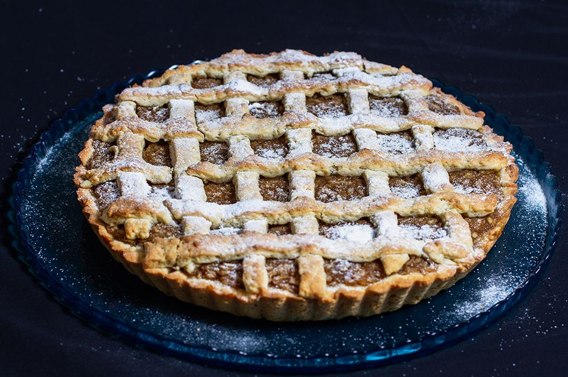

Elmalı tart için Malzemeler
- Yarım paket oda sıcaklığında tereyağı ya da margarin (125 gr)
- 1 adet yumurta
- Yarım su bardağı toz şeker
- Yarım paket kabartma tozu
- Aldığı kadar un (yaklaşık 2 su bardağından 2 çorba kaşığı fazla un)
- 4 adet orta boy elma (büyükse 3 adet yeterli)
- 2 yemek kaşığı toz şeker
- 1 tatlı kaşığı tarçın
- Pudra şekeri

Elmalı Tart Nasıl Yapılır?
- İlk olarak elmalı iç harcını hazırlayalım. Elmaların kabuklarını soyup rendeleyelim. Tarçını ve şekeri de ekleyip pişirelim ve ocaktan alıp soğumaya bırakalım.
- Daha sonra tart hamurunu hazırlayım. Bir kapta yumurta, tereyağı, şekeri iyice elimizle karıştıralım. Kabartma tozu ve unu azar azar ekleyip ele yapışmayan kulak memesi yumuşaklığında bir hamur elde edelim. Hamuru 15 dk. kadar dinlenmeye bırakalım.
- Hamur ve iç harcını tart kalına yerleştirelim. Dinlenen hamurdan portakal büyüklüğünde bir parça ayıralım. Kalan hamurdan orta boy borcam tepsisi ya da tart tepsisi kadar oklava ile açalım. Yağlanmış tepsiye yerleştirip elmalı harcı döküp yayalım. Portakal büyüklüğündeki hamuru da açıp şeritler kesip üzerine koyalım.
- Elmalı tartımızı pişirelim. Önceden ısıtılmış 185 derece fırında kızarana kadar pişirelim.
- Üzerine pudra şekeri serpip servis edelim.
AFİYET OLSUN